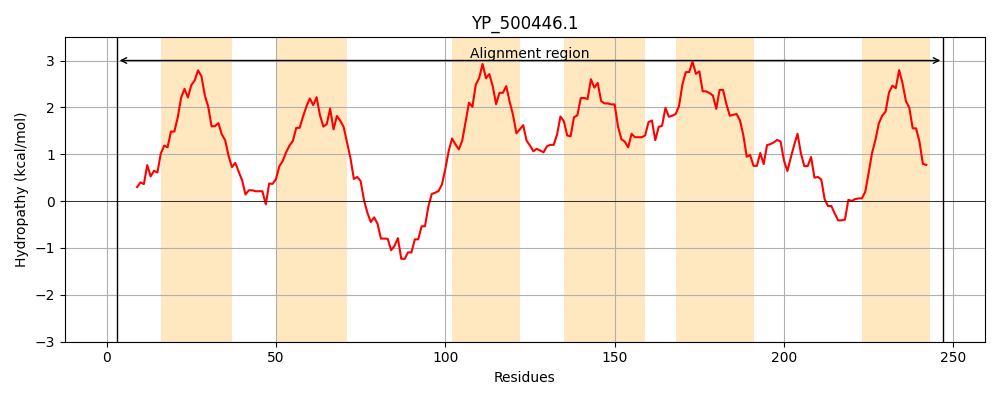
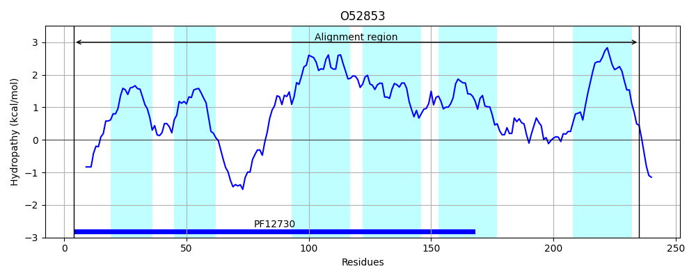
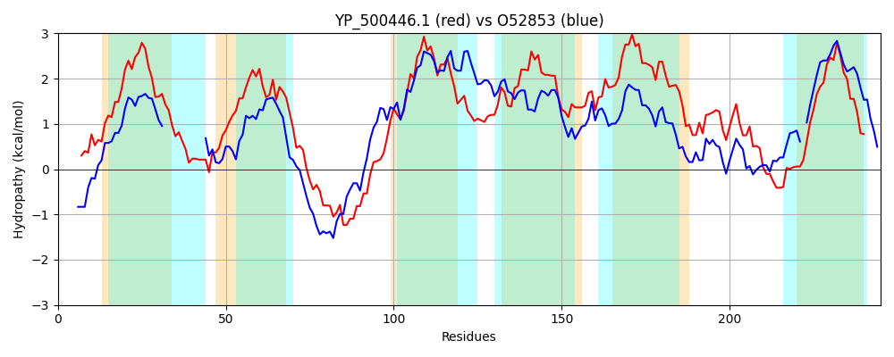

Hit Accession: O52853
Hit TCID: 3.A.1.124.2
Hit Description: gnl|BL_ORD_ID|7311 gnl|TC-DB|O52853|3.A.1.124.2 SpaE - Bacillus subtilis.
Mach Len: 245
e:0.000000
Query TMS Count : 6
Hit TMS Count: 6
TMS-Overlap Score: 4.200000
Predicted Substrates:CHEBI:29633;Mycosubtilin
BLAST Alignment:
Score: 221 , Bit scores: 89 bits, E-value: 1.6e-21, Alignment length: 245, Percentage identity: 22
Query: 3 HLKIEGIKFKNSFSMYVLLISPLVFLCFAIFTVLFAKSNTGTANSVSPYITLLFNIWPIAFIPIVLCMACNSLFKIEMRNKSFNYYLSNNWSITKEIRAKIFILSIAFLVHCFLVFIIAYIGDLIINPHPVNAMLLLVTILLMYVVSLPLIPLNFLLTRYFGVFVSILINLVLSVICVLFLTLKSLFWVLPWGIMQRIPLITLGILPNGLVVNHNSKYFNDLNALYISIIVSIIIFAIVTFLNNK 247
++K E +KFK +FS +++ L+ + F+ + ++ +N W I F+P+++ + C+ + E + +N S + K AKI I++I L+ + + + +I + + ++ LL+++ SL IPL + + +G +++++N + +++ + ++ +W +PW R+ T+GI PNGL++ +N + + + +I++SI+ F I+ FL ++
Sbjct: 4 YIKAENLKFKRTFSRKMIIFVALLNIGFSFLM------------NTQFFVPGTYNWWSIIFMPVMIALFCSLSHQKEKKASHYNGTYSLPIDLGKLWYAKIIIIAIYSLLSQVVFLVFMLLMGFVIADFSIISPSIVAASLLLWLTSLWQIPLCLFVAKKWGFTMAVMLNFIGTLVLGVMPASRAFWWFIPWSWPIRMMCPTIGIHPNGLLLENNDPLLSWM-VVPPAIVISILFFLILAFLTSR 235 | Protein Hydropathy Plots: |
|---|
|  |  |
Pairwise Alignment-Hydropathy Plot:
|
|---|
|  |